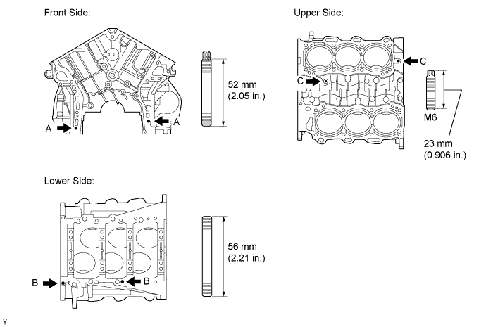
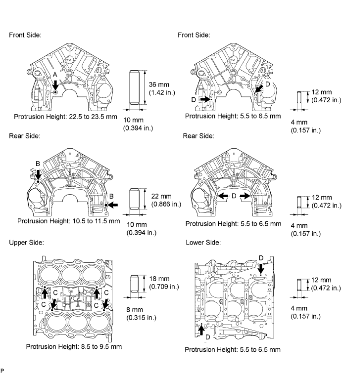
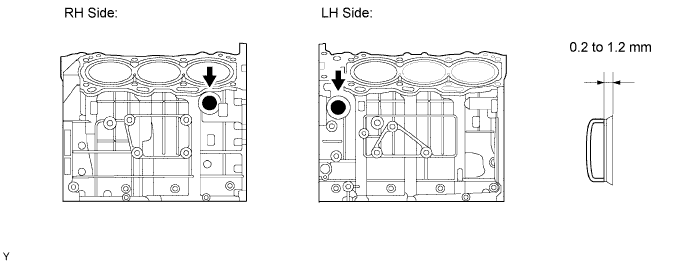
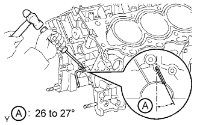
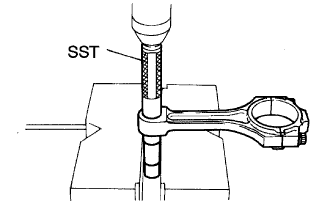
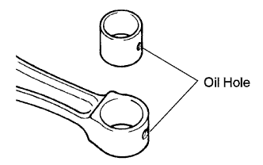
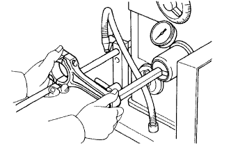

CYLINDER BLOCK > REPLACEMENT |
| 1. REPLACE STUD BOLT |
Remove the stud bolts.
Install new stud bolts.

| 2. REPLACE STRAIGHT PIN |
Remove the straight pins.
Using a plastic-faced hammer, tap in new straight pins to the cylinder block.
| Item | Specified Condition |
| Pin "A" | 22.5 to 23.5 mm (0.889 to 0.925 in.) |
| Pin "B" | 10.5 to 11.5 mm (0.413 to 0.453 in.) |
| Pin "C" | 8.5 to 9.5 mm (0.335 to 0.374 in.) |
| Pin "D" | 5.5 to 6.5 mm (0.217 to 0.256 in.) |

| 3. REPLACE CYLINDER BLOCK TIGHT PLUG |
Remove the tight plugs.
 |
Apply adhesive around new tight plugs.
Using SST and a hammer, tap in the tight plugs to the standard depth.

| 4. REPLACE OIL JET |
Using a screwdriver and hammer, tap out the oil jet.
 |
Using a screwdriver and hammer, tap in a new oil jet as shown in the illustration.
| 5. REPLACE CONNECTING ROD SMALL END BUSH |
 |
Using SST and a press, press out the bush.
 |
Align the oil holes of a new bush and the connecting rod.
Using SST and a press, press in the bush.
 |
Using a pin hole grinder, hone the bush to obtain the standard oil clearance between the bush and piston pin.